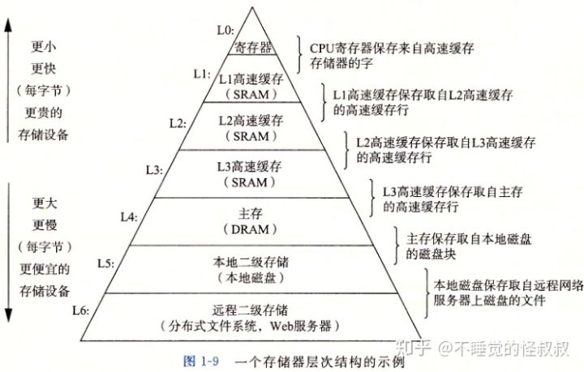
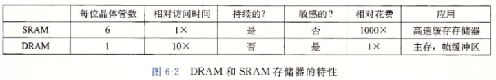
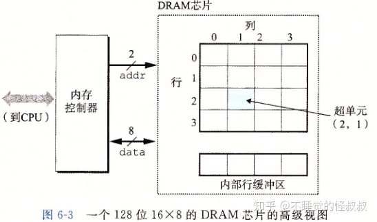
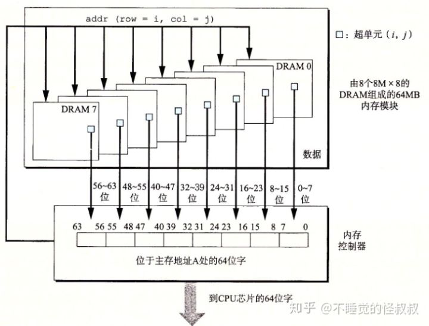
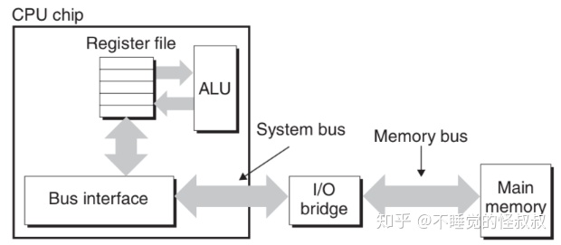

存储器系统是一个具有不同容量、成本和访问时间的存储设备的层次结构。CPU寄存器保存着最常用的数据。靠近CPU的小的、快速的高速缓存（SRAM）作为一部分存储在相对慢速的主存储器（DRAM）中数据和指令的缓冲区域。主存储器（DRAM）缓存存储在容量较大的、慢速磁盘（本地磁盘）上的数据，而这些磁盘常常又作为存储在通过网络连接的其他机器的磁盘或磁带（分布式文件系统，Web服务器）上的数据的缓存区域。

局部性是计算机程序的一个基本属性。具有良好局部性的程序倾向于一次又一次地访问相同的数据项集合，或是倾向于访问邻近的数据项集合。具有良好局部性的程序比局部性差的程序更多地倾向于从存储器层次结构中较高层次处访问数据项，因此运行得更快。
一、存储技术
1.1、随机访问存储器
随机访问存储器（RAM）分为两类：静态RAM（SRAM）和动态RAM（DRAM）。
1、静态RAM
SRAM将每个位存储在一个双稳态的存储器单元里，每个单元用六个晶体管电路实现（成本相对高）。双稳态就是电路可以无限期地保持在两个不同的电压配置或状态之一。其他任何状态都是不稳定的——从不稳定状态开始，电路会迅速地转移到两个稳定状态中的一个。
由于双稳态特性，SRAM只要有电，它就会永远保持它的值（抗干扰性强）。
2、动态RAM
DRAM将每个位存储为对一个电容的充电，每个单元由一个电容和一个访问晶体管组成（成本相对低）。与SRAM不同，DRAM存储器单元对干扰非常敏感（抗干扰性弱）。当电容的电压被扰乱之后，它就永远不会恢复了。暴露在光线下会导致电容电压改变。
内存系统必须周期性地通过对DRAM读出，然后重写来刷新内存每一位。
SRAM和DRAM的对比：

3、传统的DRAM
DRAM芯片中的单元（位）被分成d个超单元，每个超单元由 [w] 个DRAM单元组成。一个d * [公w] 的DRAM总共存储了d [w] 位信息。
超单元被组织成一个r行c列的长方形矩阵，其中r * c = d。
每个超单元有形如(i, j)的地址，i表示行，j表示列。
信息通过称为引脚的外部连接器流入和流出芯片。每个引脚携带一个1位的信号。
有两种引脚：
- addr引脚 —— 携带行和列超单元地址
- data引脚 —— 传送字节到芯片，或从芯片传出字节

每个DRAM芯片被连接到某个称为"内存控制器"的电路，内存控制器通过addr引脚和data引脚与DRAM进行数据的交互。
4、内存模块
DRAM芯片封装在内存模块中，它插到主板的扩展槽上。
Core i7系统使用240个引脚的双列直插内存模块。
下图展示了用8个8M（超单元数） * 8（每个超单元存储一个字节）的DRAM芯片构成的内存模块，总共存储64MB（8 * 8M * 8B）。

用各个DRAM芯片中相应超单元地址都为(i, j)的8个超单元来表示主存中字节地址A处的64位字。DRAM 0存储第一个（低位）字节，DRAM 1存储下一个字节，依次类推。
要取出内存地址A处的一个字，内存控制器将A转换成一个超单元地址（i, j)，并将它发送到内存模块，然后内存模块再将i和j广播到每个DRAM。作为响应，每个DRAM输出它的(i, j)超单元的8位内容。模块中的电路收集这些输出，并把它们合并成一个64位字，再返回给内存控制器。
5、增强的DRAM
一些后来发展并增强DRAM：
- 块页模式DRAM（Fast Page Mode DRAM， FPM DRAM）
- 扩展数据输出DRAM（Extended Data Out DRAM，EDO DRAM）
- 同步DRAM（Synchronous DRAM, SDRAM）
- 双倍数据速率同步DRAM（Double Data-Rate Synchronous DRAM, DDR SDRAM）
- 视频RAM（Video RAM，VRAM）
6、非易失性存储器
如果断电，DRAM和SRAM会丢失它们的信息，它们是易失的。
而非易失性存储器即使是在关电后，仍然保存着它们的信息。
只读存储器（ROM）以它们能够被重编程（写)的次数和对它们进行重编程所用的机制来区分的：
- 可编程ROM（Programmable ROM, PROM） —— 只能被编程一次
- 可擦写可编程ROM（Erasable Programmable ROM，EPROM） —— 被擦除和重编程的次数的数量级可以达到1000次
- 电子可擦除PROM（Electrically Erasable PROM， EEPROM） —— 能够被编程的次数的数量级可以达到 [10的5次方]
7、访问主存
数据流通过总线在CPU和DRAM主存之间传输。这些传输的过程称为总线事务。
读事务从主存传送数据到CPU，写事务从CPU传送数据到主存。
下图是总线结构的示例图：
